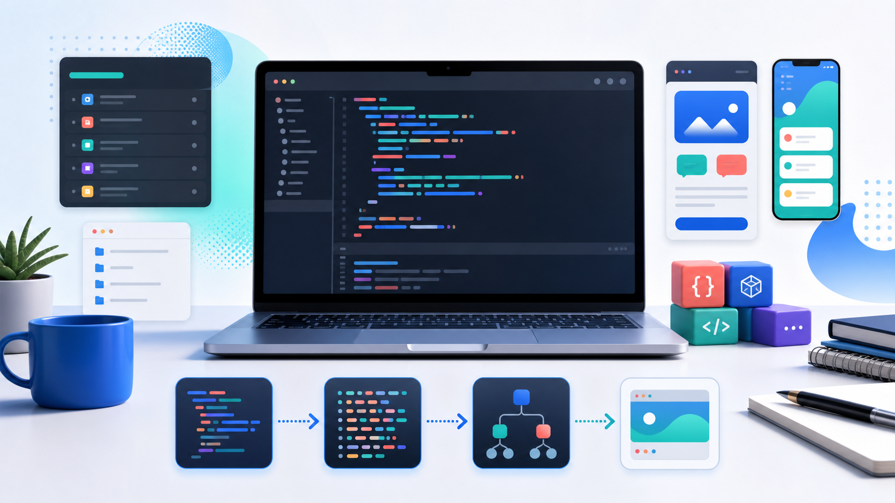

Variables, strings, numbers, booleans, nil, lists, objects, loops, functions, classes, and error handling.
Python-powered language and project compiler
NovaDev
Write normal programming code, then move up to high-level app declarations that generate real project files. NovaDev teaches the language pipeline and gives developers a practical path from scripts to full-stack apps.
Three.js scene
Shoelace UI
Highlight.js code
Vercel static

python install-novadev.py \
--zip-url https://novadev-org.vercel.app/downloads/novadev.zip \
--install-all-packages
nova shell
nova> let name = "Aldane"
nova> print("Hello {name}")
Hello AldaneWhat NovaDev Offers
One language for learning, scripting, and project generation.
NovaDev is organized like a real language: lexer, parser, AST, runtime, module system, shell, package manager, and a ProjectIR compiler layer for generating application code.
Run programming code, load files, inspect tokens and AST, build projects, and test ideas from one prompt.
Declare apps, tables, pages, routes, auth, themes, workflows, architecture, Vue, Tailwind, and Flask.
Use novapm to install the language, manage packages, pack modules, and point to registry JSON.
Compiler Pipeline
Source code becomes running software.
The NovaDev pipeline starts with source text. The lexer turns text into tokens, the parser turns tokens into AST nodes, the runtime executes program logic, and the project compiler converts app declarations into ProjectIR before writing frontend and backend files.
Source
A developer writes .nova files with code, modules, and app declarations.
Tokens
The lexer recognizes identifiers, strings, numbers, keywords, punctuation, and operators.
AST
The parser builds statements and expressions such as functions, loops, tables, pages, and routes.
Runtime + ProjectIR
The interpreter executes code, while ProjectIR stores app structure for code generation.
Learning Paths
Learn it like Python: basics first, then projects.
Language basics
Start with values, variables, control flow, functions, classes, modules, and shell usage.
Build applicationsLearn app modes, custom mode, ProjectIR, workflows, UI generation, and Flask backends.
Study examplesExplore ecommerce, construction, security, school, CRM, custom church, gym, and general-purpose examples.
Website File Structure
nova website/
index.html
learn.html
projects.html
packages.html
examples.html
reference.html
assets/
css/styles.css
js/site.js
js/novadev-scene.js
novadev-hero.png
downloads/
install-novadev.py
novadev.zip
registry.json
checksums.json
packages/
hello-ui.zip
auth-kit.zip
dashboard-kit.zip
vercel.json
README.mdVercel Ready
Static files, no build step required.
This site is designed for a frontend-first Vercel deployment. It uses plain HTML pages with shared assets, CDN UI libraries, a downloadable installer script, and clean static routes.
Open Structure Guide